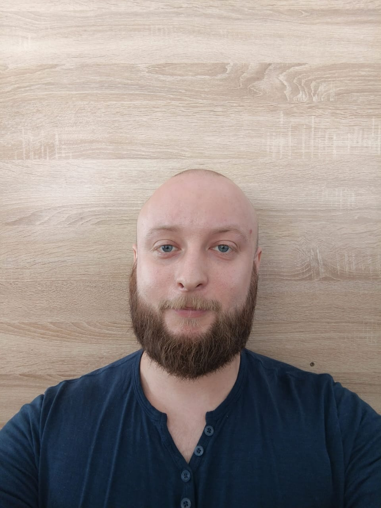

Обо мне

Я Дмитрий Стебеляк, инженер-программист с опытом работы в области IT и поддержки образовательных учреждений. Я специализируюсь на установке и обслуживании программного обеспечения, настройке антивирусных систем и помощи пользователям в решении технических вопросов. Я окончил Дальневосточный федеральный университет со степенью информатика-экономиста и постоянно совершенствую свои навыки в IT сфере.
Навыки
- MS Office (Word, Excel, PowerPoint, Outlook, Access)
- Adobe Photoshop, Adobe Illustrator
- Sony Vegas, DaVinci Resolve
- Установка и обслуживание ПО
- Настройка сетей и антивирусных систем
Опыт работы
Инженер-программист в МАУ ДО «ДШИ» г. Корсаков
Период работы: с октября 2016 г. по настоящее время
Обязанности:
- Ведение школьного сайта и социальных сетей
- Анализ потребностей школы в IT и предложение новых решений
- Консультирование и помощь персоналу по вопросам работы с IT-оборудованием
- Установка, настройка и обслуживание ПО и антивирусных систем
Техник в МАОУ «СОШ №2» г. Корсаков
Период работы: с октября 2015 г. по январь 2017
Обязанности:
- Ведение школьного сайта и социальных сетей
- Поддержка и обслуживание компьютерного парка
- Консультирование учеников и учителей по вопросам IT